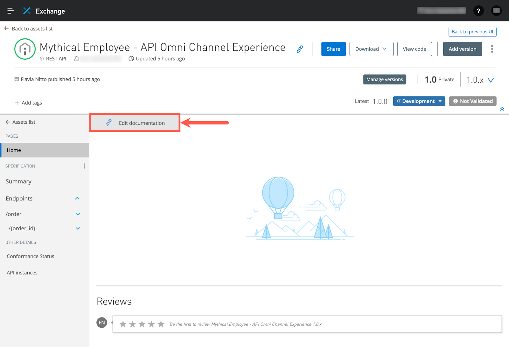

Um dos maiores desafios encontrados pelos primeiros a adotar SOA (Service-Oriented Architecture) foi como dimensionar suas atividades de desenvolvimento. SOA mantém muitos dos princípios de reutilização que discutimos em nossa abordagem "conduzida por API" para o desenvolvimento de software. Infelizmente, a maioria dos esforços de SOA não conseguiu atingir seus objetivos de reutilização devido a alguns fatores limitantes, incluindo:
Serviços mal documentados
Falta de ferramentas maduras para facilitar a descoberta de serviços
Dependência excessiva de um número limitado de recursos qualificados
Processos onerosos para obter acesso aos serviços
Como resultado, muitas iniciativas baseadas em SOA só conseguiram atingir parcialmente seus objetivos de reutilização porque os desenvolvedores adotariam o caminho de menor resistência e simplesmente recriariam os serviços em vez de reutilizá-los. A plataforma MuleSoft Anypoint trata de todos esses problemas, fornecendo ferramentas inovadoras como o Anypoint Exchange, que amenizam esses desafios.
Vamos dar uma olhada no processo de documentação de nossa Omni Channel Experience API reutilizável.
Garantir que sua API seja fácil de encontrar e "pronta para o autoatendimento" é sua responsabilidade como designer de API. Vamos encontrar nossa API no Exchange e adicionar mais à nossa documentação API.
Navegue até o Exchange no "menu lateral " no canto superior esquerdo do Design Center.
Use a barra de pesquisa para encontrar sua API se ela não estiver visível na lista de ativos do Exchange. Clique em sua API assim que encontrá-la:
Clique no botão "Edit documentation" para entrar no modo de edição.

Crie sua própria documentação para sua API ou copie o seguinte texto no editor:
A **Omni Channel Experience API** é usada para simplificar o acesso a pedidos, produtos e recursos do carrinho de compras necessários para aplicativos móveis e de e-commerce.
Os desenvolvedores que precisam podem facilmente compor aplicações inovadoras utilizando esta API para fazer o seguinte:
- Recuperar o Catálogo de Produtos e detalhes sobre um produto
- Adicionar produtos a um carrinho de compras com estado
- Pesquisar pedidos e recuperar seu status
- Criar um novo pedido
Clique no botão "Save" na parte superior da tela. Seu rascunho da documentação da API é salvo, mas não publicado, até que você publique formalmente as atualizações finais ao Exchange, portanto, fique à vontade para salvar vários rascunhos à medida que cria sua documentação.
Você pode pressionar Publish, Cancel ou Save.
Publish - Publicar alterações na documentação para o Exchange
Cancel - Descartar alterações
Save - Salvar as alterações, mas não publicar no Exchange
Pressione o botão Publish. Suas alterações na documentação agora estão visíveis no Exchange!
A documentação do Exchange pode ser composta por várias páginas. Até agora, acabamos de criar a página inicial de nossa API.
Como no Design Center, no Exchange você pode olhar o Resumo da API. O Resumo da API oferece a oportunidade de fazer uma solicitação e chamar o serviço mockado ou uma implementação da API.
Vamos ver como isso pode ser feito.
Vá para "Summary"
Pressione /order/{order_id} com o método GET
No lado direito do painel você verá o link do serviço mockado que já está definido pela especificação. Também é possível ver os parâmetros e cabeçalhos como eles são preenchidos. Na aba Query parameters, você pode clicar no e adicionar os parâmetros para serem enviados.
Na seção de Headers, adicione os campos:
Content-Type: application/json
Accept: application/json
Pressione SEND e veja o que acontece.
Na resposta simulada, podemos ver:
Código da resposta HTTP e o tempo de resposta
Clicando nos três pontos, podemos salvar a resposta como arquivo, copiar para a área de transferência, salvar como arquivo HAR, habilitar/desabilitar mais detalhes sobre a resposta e alterar o formato de visualização
Ao habilitar o recurso de mostrar mais detalhes da solicitação, temos informações adicionais sobre cabeçalhos de URL, resposta e solicitação.